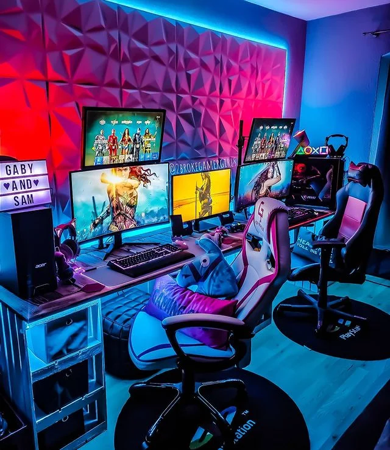

Gaming
Gaming refers to the activity of playing games, encompassing a wide range of formats such as video games, board games, card games, and online games. In the context of video games, gaming involves interacting with digital environments through various platforms like consoles, PCs, or mobile devices. It serves as a form of entertainment, social interaction, and even a competitive sport in the realm of esports. The gaming industry has evolved significantly, with advancements in technology leading to more immersive and interactive experiences. Cloud gaming, for instance, allows players to stream games directly to their devices without the need for high-end hardware, broadening access to gaming across different demographics
